L’idée
Entre Overcooked et Animal Crossing : on construit, on décore, on accueille des visiteurs au fil des saisons.

Un petit salon de thé devient une auberge, puis tout un domaine. Un jeu mobile cosy, en 3D, dans la campagne japonaise.
Entre Overcooked et Animal Crossing : on construit, on décore, on accueille des visiteurs au fil des saisons.
Gameplay, règles, style : tout est décidé en amont. Près de cent images générées fixent l’ambiance.
Des agents IA transforment ces images en jeu : modèles 3D, interface, code. Direction et validation à chaque étape.
À gauche, l’image de référence. À droite, le jeu construit par les agents.
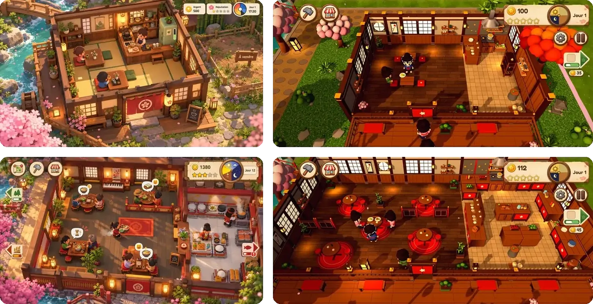
Captures du prototype, au format iPhone.
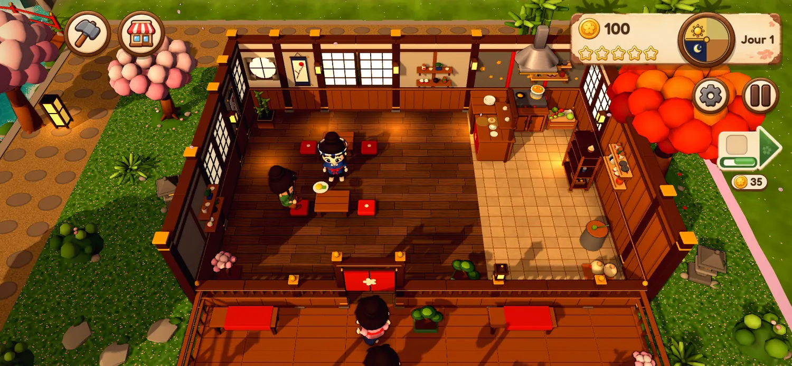
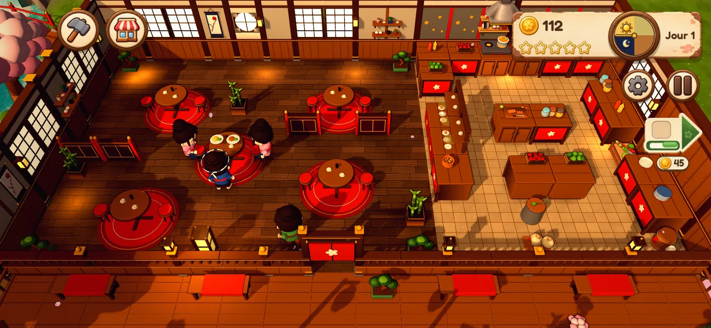

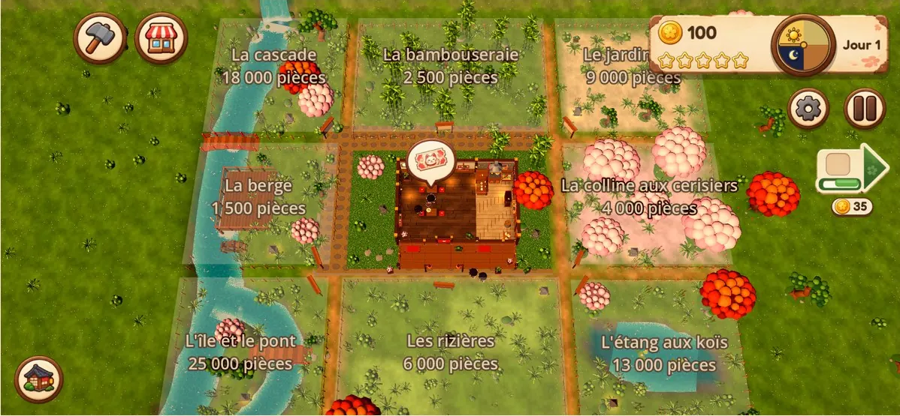
Les images qui fixent l’ambiance du jeu.
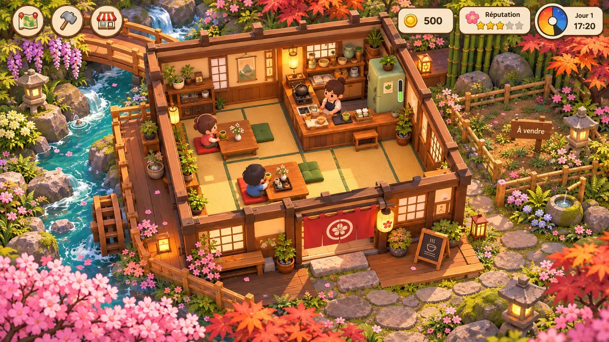
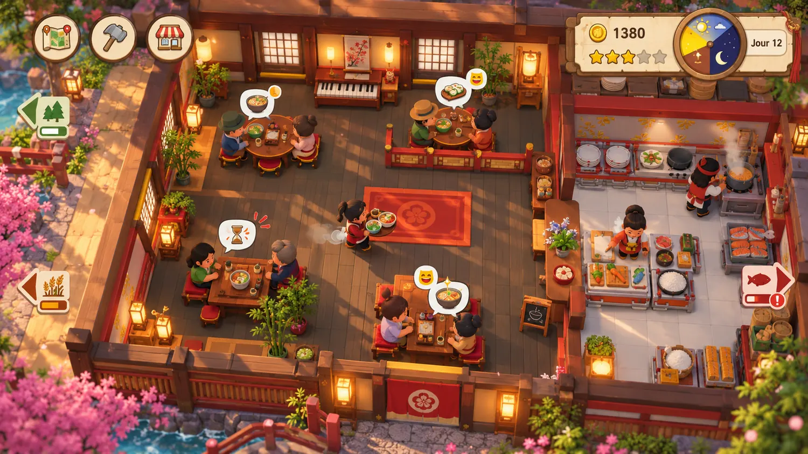
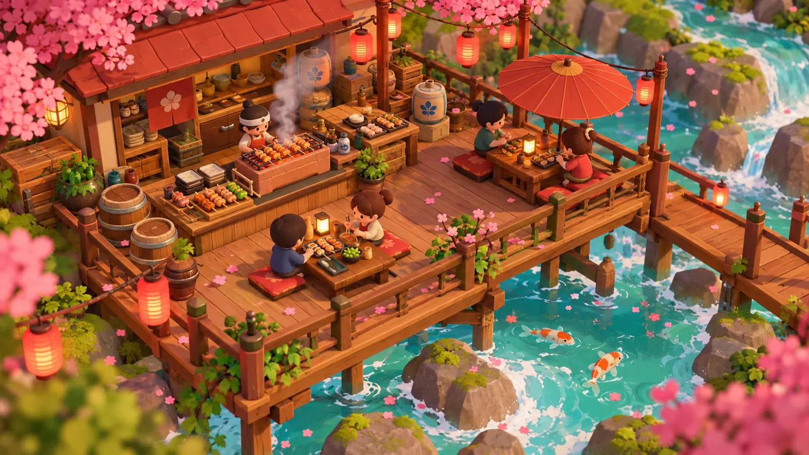
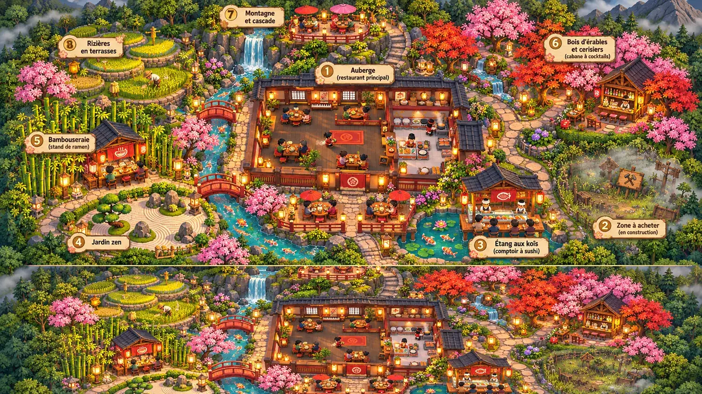
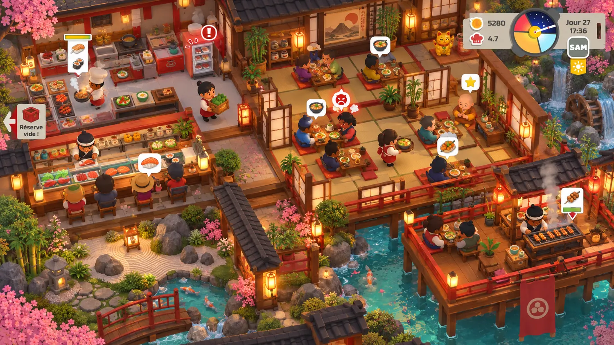
Les éléments qui peuplent le jeu.
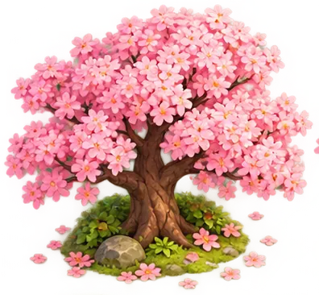
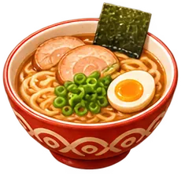

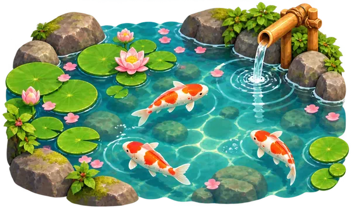
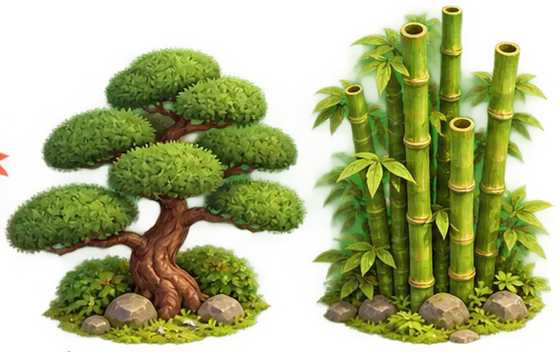
Du dessin au modèle 3D animé.

Ce que ça prouve
Avec une direction claire, des agents IA livrent un jeu 3D complet : modèles, interface et code.

Des agents IA bien dirigés pour produire plus, avec la même équipe.

Projet suivant
Breaking Face. Une bande-annonce 100 % IA.